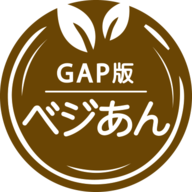
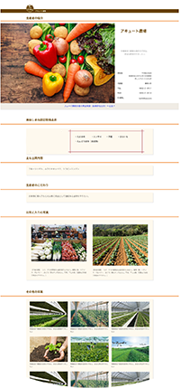

『GAP版ベジあん』
とは
GAPに取り組むための自己点検機能と
農産物の生産履歴を開示する
ためのシステム
GAP認証の管理点と適合基準（基準書）の自己点検と自己点検の結果を管理出来ます。また農作業の記録を残してその生産歴情報を消費者や出荷先に開示して、安心・安全であることを伝えることが出来ます。
※GAPとはGood Agricultural Practiceの略で、直訳すると良い農業のやり方になります。農林水産省では農業生産工程管理と訳され、信頼性の高い生産管理体制で全数品質保証を目指す予防型の取り組みのことです。

「GAP版べじあん」で
「GAP版べじあん」で
GAP認証取得・維持をサポート！
・管理点と適合基準（基準書）の各項目別に自己点検結果と資料を管理できます。
・ＧＡＰ認証に必要な資料が一元管理出来るので審査時はもちろん日常の取扱いも楽になります。
※認証種類：JGAP認証（予定）、ASIAGAP認証（予定）、美味しまね認証ゴールド。
スマホで簡単
作業記録
播種・定植から、農薬散布、施肥、各種作業、収穫、出荷までをスマートフォンで農場から記録することができます。
また、希釈倍数の計算や農薬と作物の使用適正チェックなど農場で使いたい便利機能もあります。
購入者向け
農場情報を自動作成
購入者向けの農場情報の内、出荷している農作物の生産履歴はスマートフォンの作業記録を元に自動作成されるので、新しい作物を作るたびに内容を更新する必要はありません。

出荷先への
トレーサビリティ開示
出荷時にロット番号を採番するので、出荷先ではその番号を元に栽培履歴を見ることが出来ます。
生産履歴を開示することで出荷先との信頼関係が構築できます。